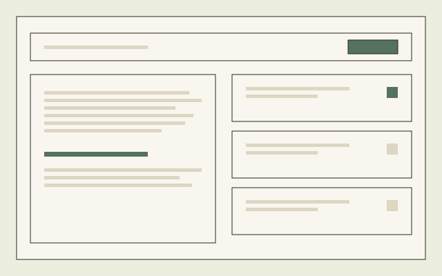
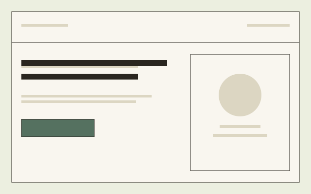
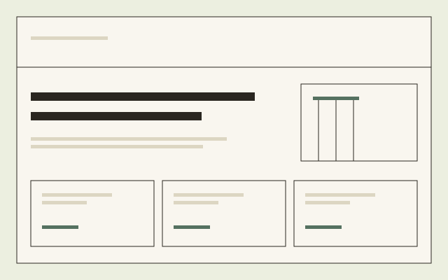
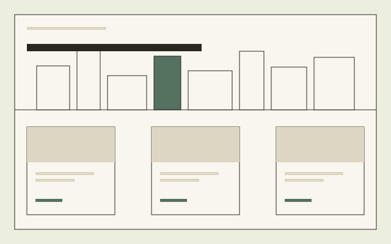
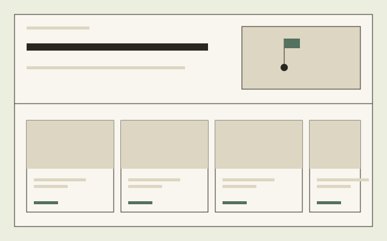

Product Design
Centrus
A centralised platform for accelerating translational safety assessments.
View case studyCase studies
Nine case studies across product and web design — from scientific software platforms to local businesses. Filter by discipline, or browse everything.
A centralised platform for accelerating translational safety assessments.
View case study
A data-visualisation tool exposing pre-clinical study insights.
View case study
From expert service to advanced target safety assessments.
View case study
A Figma component library powering the in-house design system.
View case study



